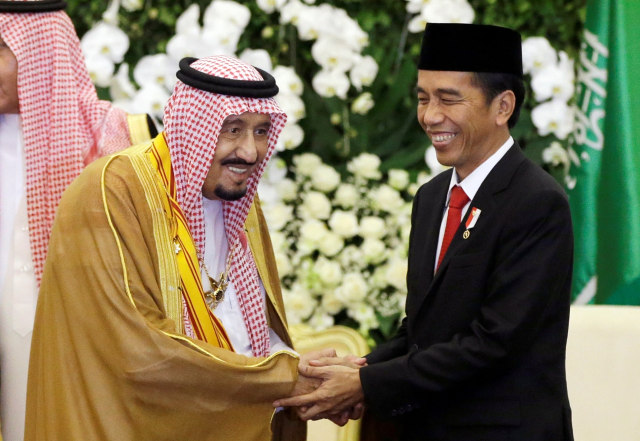

Kerjasama antara Saudi Arabia an Indonesia(Bilateral), ekspor Indonesia ke Arab (produk pertanian, minyak kelapa sawit, tekstil). Pada tahun 2008, perdagangan bilateral mencapai hampir US$6 miliar. Karena ekspor minyak dan gasnya, neraca perdagangan sangat menguntungkan Arab Saudi, sementara Indonesia terutama mengekspor kayu lapis, tekstil, pakaian jadi, minyak sawit, kertas dan ban.
Hubungan perdagangan Indonesia dengan Arab Saudi, yang mencakup ekspor produk pertanian, minyak kelapa sawit, dan tekstil, berkontribusi langsung pada Tujuan Pembangunan Berkelanjutan (SDGs) nomor 9, yaitu Industri, Inovasi, dan Infrastruktur. Ekspor produk seperti minyak kelapa sawit dan kayu lapis menunjukkan adanya pengembangan industri yang bergantung pada infrastruktur yang efisien untuk mendukung proses produksi dan distribusi internasional. Indonesia perlu mengembangkan sistem logistik dan infrastruktur yang tangguh untuk meningkatkan daya saingnya di pasar global, yang juga sejalan dengan upaya meningkatkan kualitas dan kuantitas ekspor.
Selain itu, untuk meningkatkan daya saing di pasar internasional, sektor-sektor yang terkait dengan ekspor, seperti pertanian dan tekstil, harus mendorong inovasi dalam metode produksi. Penggunaan teknologi baru dalam pengelolaan kelapa sawit dan produksi tekstil dapat mengurangi biaya dan meningkatkan kualitas produk, serta mengoptimalkan hasil. Hal ini juga relevan dengan tujuan SDGs untuk meningkatkan inovasi di sektor industri dan pertanian yang dapat mengarah pada penciptaan produk dengan nilai tambah tinggi dan memenuhi standar internasional.
Hubungan perdagangan ini juga berpotensi mendukung pembangunan industri yang berkelanjutan. Untuk itu, sektor-sektor seperti kelapa sawit dan kayu lapis perlu beradaptasi dengan praktik yang ramah lingkungan dan berkelanjutan, guna menjaga keberlanjutan pasokan dan mengurangi dampak lingkungan. Meningkatkan keberlanjutan dalam industri-industri ini tidak hanya mendukung ekonomi Indonesia tetapi juga memajukan tujuan SDGs yang menekankan pada industrialisasi yang inklusif dan ramah lingkungan. Dengan demikian, perdagangan dengan Arab Saudi berperan penting dalam memajukan infrastruktur, inovasi, dan industri yang lebih berkelanjutan di Indonesia